Attribute Form¶
Configure feature attribute forms in your QGIS project before performing fieldwork. Form configuration in QGIS for QField operates similarly to standard QGIS projects, with specific mobile optimizations.
Attribute Form Configuration¶
To configure an attribute form, open vector layer properties by navigating to Vector Layer Properties... > Attribute Form in QGIS.
Select appropriate widget types based on the expected behavior of each attribute. The table below summarizes attribute widget types supported in QField.
Below is an overview what widget types are available and supported in QField.
| Widget type | Acceptat | Observații |
|---|---|---|
| Attachment | This field is combined with camera integration, to know more jump to Attachment (photo settings) | |
| Color | ||
| Date / Time | ||
| Checkbox | ||
| Ascuns | ||
| Range | Editable spinbox and slider | |
| Relation Editor | ||
| Referința Relației | ||
| Editare Text | ||
| Hartă de Valori | Combobox or radio button (the latter unique to QField) | |
| Value Relation | Combobox or radio button (the latter unique to QField) | |
| UUID Generator |
QField also supports container widgets:
| Widget type | Acceptat | Observații |
|---|---|---|
| QML widget | ||
| HTML widget | ||
| Text widget | ||
| Spacer widget |
For other attribute widget types not yet supported, consider sponsoring an implementation.
General Attribute Settings¶
Project Manager
Configure general form options in QGIS under Vector Layer Properties... > Attribute Form:
-
Drag and drop designer": Organize form layouts using containers such as tabs and groups. Incorporate conditional visibility rules and default values to enhance form interactivity. Read more in the QGIS Drag and Drop Designer Documentation.
-
Hide attribute form upon: You can hide the attribute form by changing from the "Show form on Add Feature" to the setting "Suppress attribute form". When adding a new feature in QField, no attribute form needs to be populated. Note: In such a case, you have to configure the attribute form in such a way that all constraints/rules are met even if you do not add any attributes.
-
Editable: You can decide whether a field is editable or not by activating it in the widget display of the corresponding field.
-
Remember last values: If you don't want to add the same value again and again you can enable this option under the widget display in QGIS. QField, however, offers a more fine-grained control over the last used values. If you enable this option in QGIS, the rule will always apply. With QField you can change and disable this option at any point during data collection.
-
Default values": Pre-fills attribute fields using QGIS expressions. QField supports positioning variables (such as GNSS variables) and QFieldCloud variables.
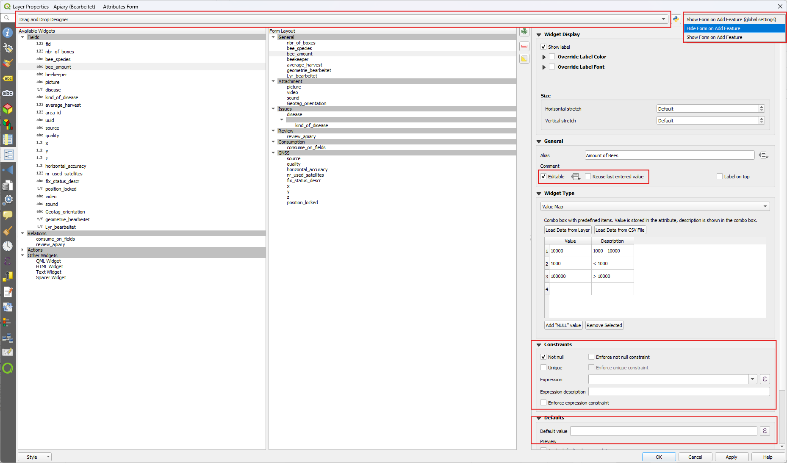
{kind=link}
Feature Form Wizard Mode¶
QField supports Wizard Mode for feature forms containing multiple root tabs. When enabled, forms transform into a step-by-step, linear sequence.
Wizard Mode provides a guided workflow for field workers filling out complex forms, enforcing data constraints sequentially across form pages.
Note
Wizard Mode requires organizing form fields into multiple tabs.
Configuring Wizard Mode¶
Project Manager
Organize your feature form into tabs using the Drag and drop designer in QGIS before enabling Wizard Mode.
{kind=link}
Flux
- Open your project in QGIS.
- Navigate to Project > Properties... > QField or click the settings icon in the QFieldSync panel.
- Enable Enable QField feature forms' wizard mode.
- Save your project and synchronize it to QFieldCloud.
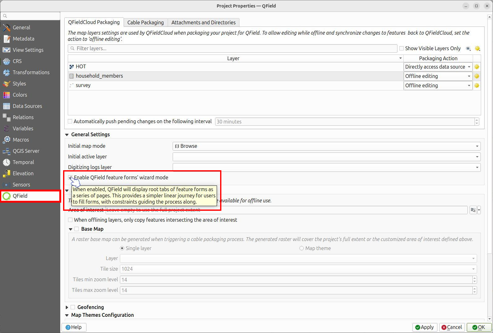
{kind=link}
Using the Wizard in the Field¶
Muncă de teren
When opening a feature form with Wizard Mode enabled, the interface displays one tab page at a time.
Navigating Pages: A navigation bar appears at the bottom of the attribute form:
- Previous page / Next page: Navigate through form tabs sequentially using the navigation buttons.
- Progress Ring: Displays form completion progress between navigation buttons.
Constraint Validation:
Wizard Mode evaluates QGIS form constraints on a page-by-page basis:
- Visual Feedback: Progress indicators and navigation buttons change color based on validation status. Indicators turn red when hard constraints fail and yellow or orange when soft constraints trigger warnings.
- Blocking Progression: Failing a hard constraint displays an error message ("Hard constraints not satisfied") and blocks navigation to subsequent pages until corrected.
Saving the Feature:
Wizard Mode hides the top-right Save button.
- On the final form page, the Next page button transforms into a Save button.
- Tapping Save evaluates form constraints one last time, commits the feature, and displays a confirmation message ("Changes saved").
Working with Relations¶
Project Manager
For detailed information on setting up layer relations in QGIS, refer to the QGIS Relations Documentation.
Value Map Widget Configuration¶
Control automatic transitions from button interface displays to scrollable lists when configuring Value Map widgets.
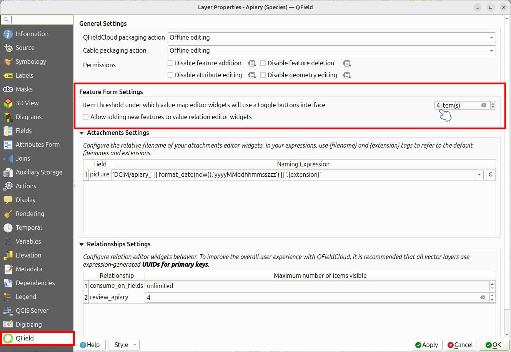
{kind=link}
Flux
- Navigate to Vector Layer Properties... > QField.
- Under Feature Form Settings, enable the option and set the maximum item threshold to trigger toggle button interfaces.
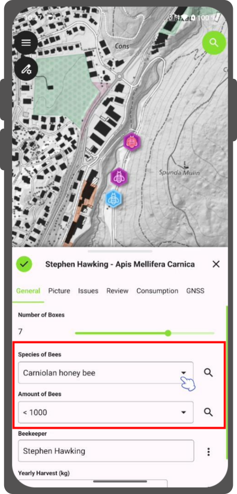
{kind=link}
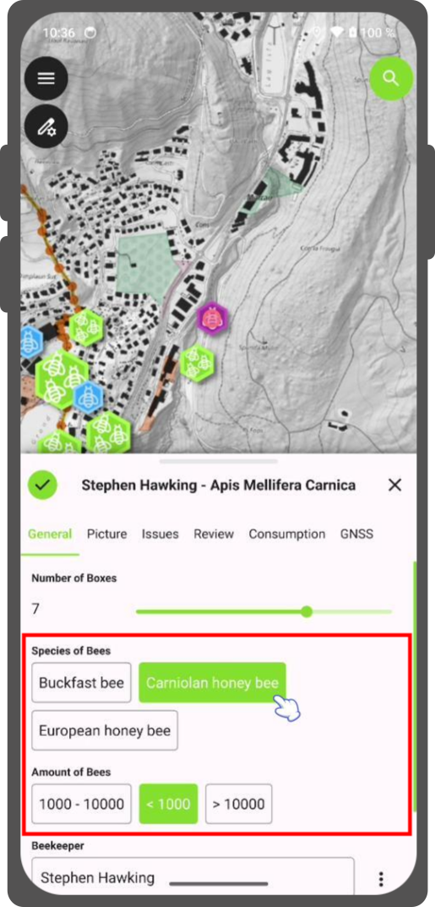
{kind=link}
Attachment Widget¶
Project Manager
The Attachment widget stores file paths for feature media and documents.
Use the Attachment widget to:
- Capture photos or select pictures from the gallery.
- Record audio clips.
- Record video files.
- Link external documents (such as PDF files).
- Draw sketches directly in QField.
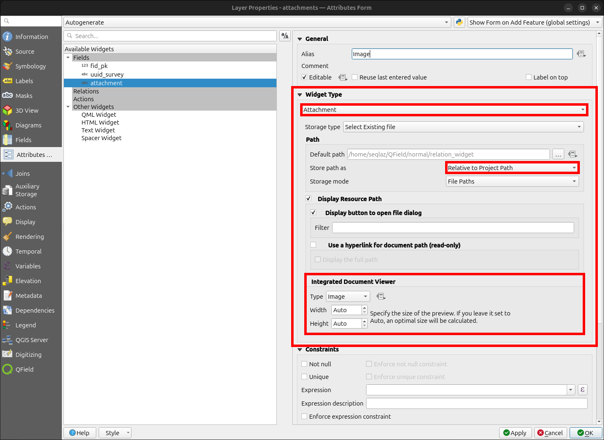
{kind=link}
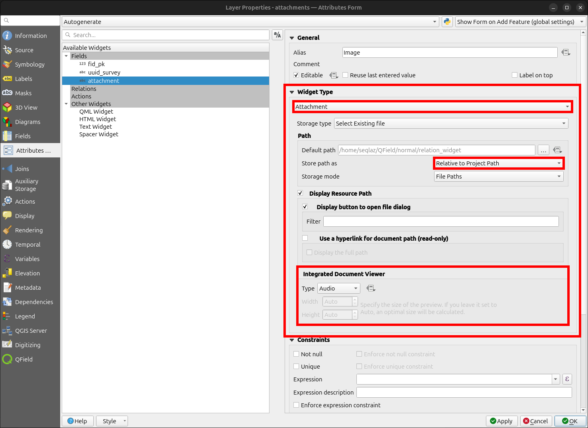
{kind=link}
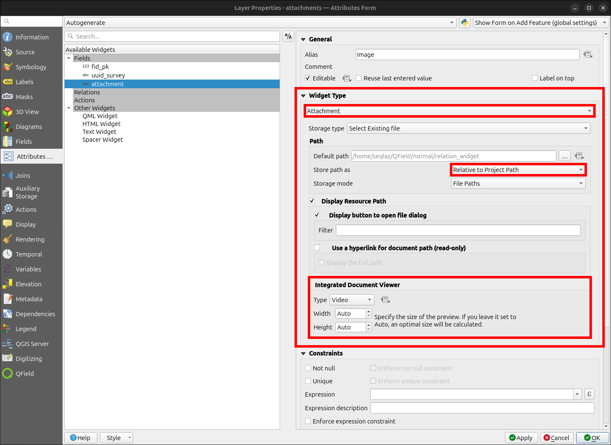
{kind=link}
Note
Set attachment file paths to relative. QField stores media files in project subdirectories referenced by text attribute fields.
Tap the camera, video, microphone, or document icon to add media attachments. QField displays the default media button configured in QGIS inside the attribute form.
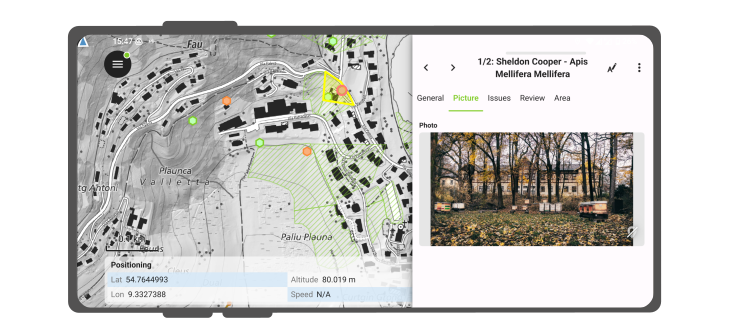
{kind=link}
Copy media subdirectories when synchronizing projects manually.
QField displays file names for document attachments by default. Enabling the Hyperlink option on Attachment widgets displays file paths as external hyperlinks.
{kind=link}
Setting a Specific Attachment Path¶
Project Manager
Configure media attachment file paths in QFieldSync.
By default, QField saves photos to DCIM, audio recordings to audio, and videos to video using timestamped file names.
Flux
- Navigate to Vector Layer Properties... > QField.
- Configure attachment file naming expressions under Attachments Settings.
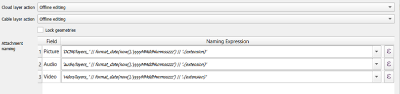
{kind=link}
Value Relation Widget¶
Project Manager
The Value Relation widget displays values from a related layer in a combobox or toggle button layout.
The Value Relation widget supports toggle button interfaces similar to Value Map widgets.
Configure the following parameters:
- Layer: Select the layer containing lookup values.
- Key column: Select the attribute column containing saved key values.
- Value column: Select the attribute column displaying readable labels during data collection.
- Order by Value: Sort displayed values by key, value, or a specified column.
- Group column: Group lookup values using another attribute column (such as grouping tree species by genus). When grouped, QField displays the widget as a list regardless of toggle button settings.
- Allow NULL value: Allows leaving the field blank.
- Use Completer: Enables auto-complete searching across available lookup values.
- Allow multiple selections: Allows selecting multiple lookup values for a single feature.
Group Value Configuration¶
Project Manager
Flux
- Select the attribute column used to organize items into groups.
- (Optional) Enable Display group name to display group titles as distinct section headers.
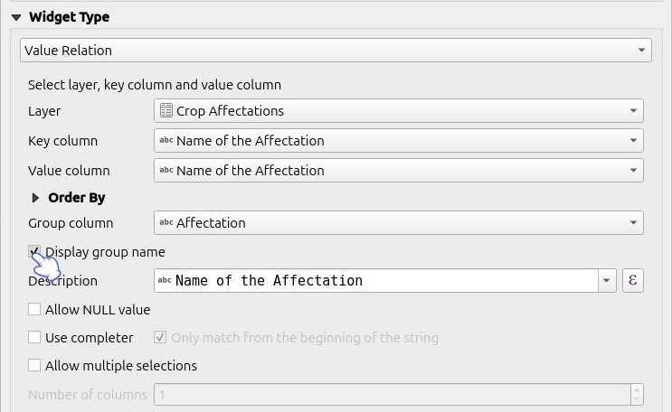
{kind=link}
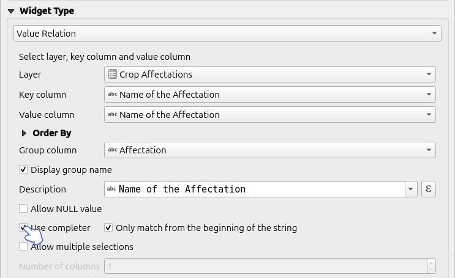
{kind=link}
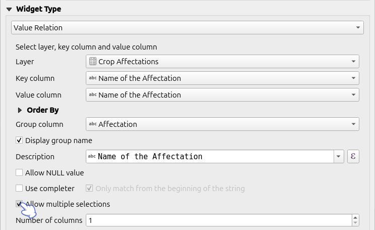
{kind=link}
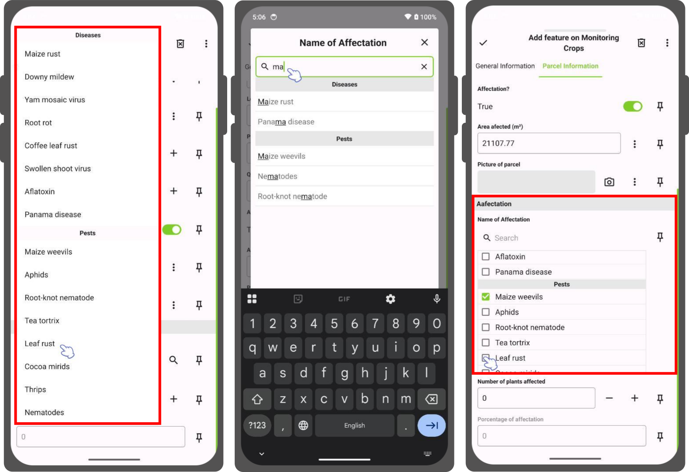
{kind=link}
Use Auto Complete¶
Project Manager
Flux
- Navigate to Vector Layer Properties... > Attribute Form.
- Set the widget type to Value Relation.
- Enable Use completer.
Muncă de teren
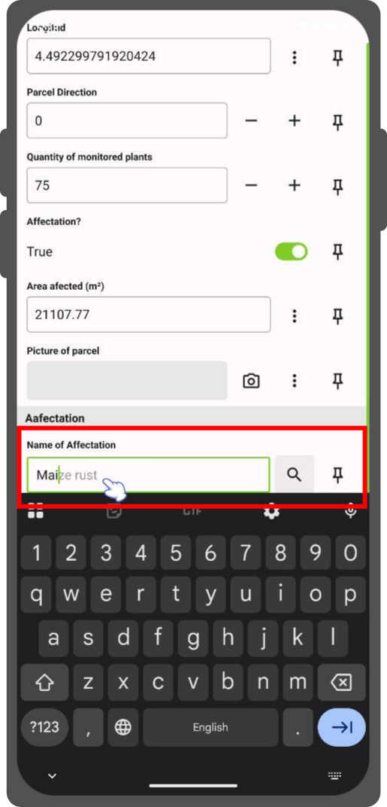
{kind=link}
Conditional Visibility¶
Project Manager
Hide form containers or fields based on QGIS expressions. Use conditional visibility when specific attributes are required only under certain conditions.
Example: Disease Attribute Visibility¶
Flux
- Create a container group in the attribute form designer.
- Define a visibility expression for the group (for example, display the group only when a feature is marked as sick).
- Add conditional attribute fields into the container group.
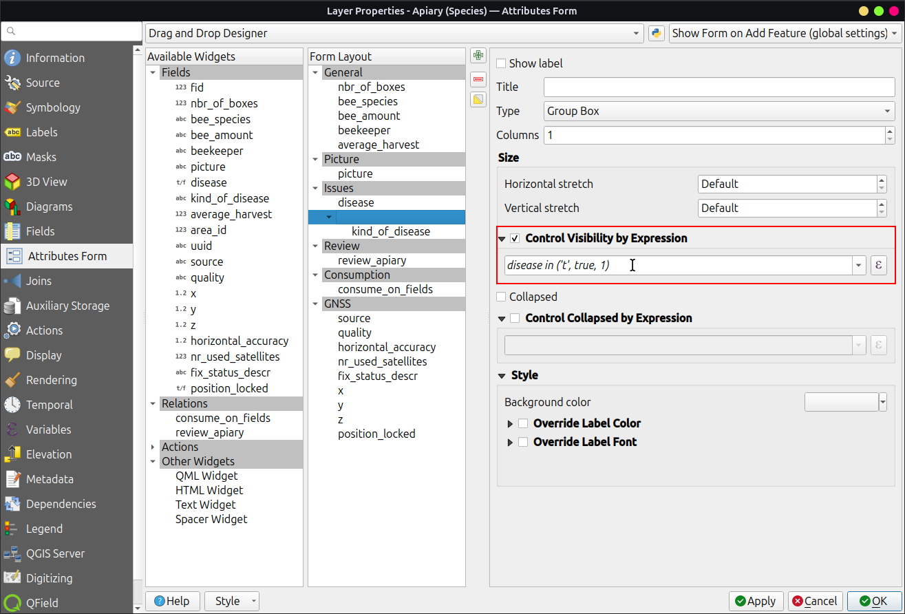
{kind=link}
Muncă de teren
Conditional Row Styling¶
Project Manager
QField supports QGIS conditional row styling to provide visual feedback in list views (such as identify results or relation lists). Use expressions to change background colors, text colors, and font styles based on feature data.
Note
QField supports full row styling in feature lists.
Flux
- Open your project in QGIS.
- Right-click your vector layer in the Layers panel, select Open Attribute Table, and click Conditional Formatting.
- Switch to the Full row tab at the top of the Conditional Formatting panel.
- Click New Rule.
- Enter an evaluation expression (such as
"status" IS 'Good'). - Configure visual formatting options:
- Background color
- Text color
- Font styles (Italic, Underline, Strikeout)
- Click Done to save the rule.
- Save your QGIS project and synchronize it to QField.
{kind=link}
Muncă de teren
When viewing feature lists in QField (such as identify results or relation lists), items automatically apply defined conditional formatting rules.
{kind=link}
Define Constraints¶
Project Manager
Attach expression rules as attribute constraints. Features require satisfying all constraints before saving edits. Add custom description messages to inform users when constraints fail.
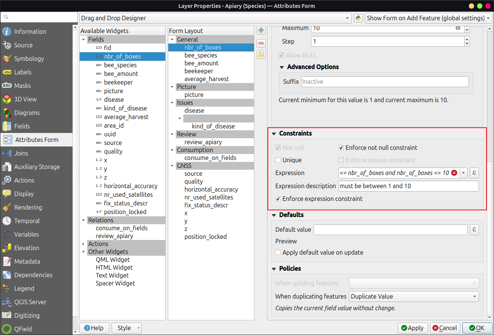
{kind=link}
Examples of constraint expressions:
- Restrict elevation values:
"elevation" < 5000 - Require non-null identifiers:
"identifier" IS NOT NULL
Define Default Values¶
Project Manager
Configure default values to pre-fill attribute forms when digitizing new features. Default values remain editable in the form unless fields are locked.
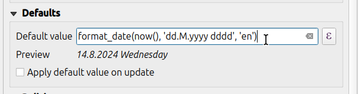
{kind=link}
Attention
Avoid enabling Apply default value on update for primary key fields.
Working with Expressions¶
Use Layer Names rather than Layer IDs when building expressions for QField. QFieldSync conversion jobs may assign new internal Layer IDs, causing expressions referencing static Layer IDs to fail. Referencing Layer Names ensures consistent expression evaluation across project exports.
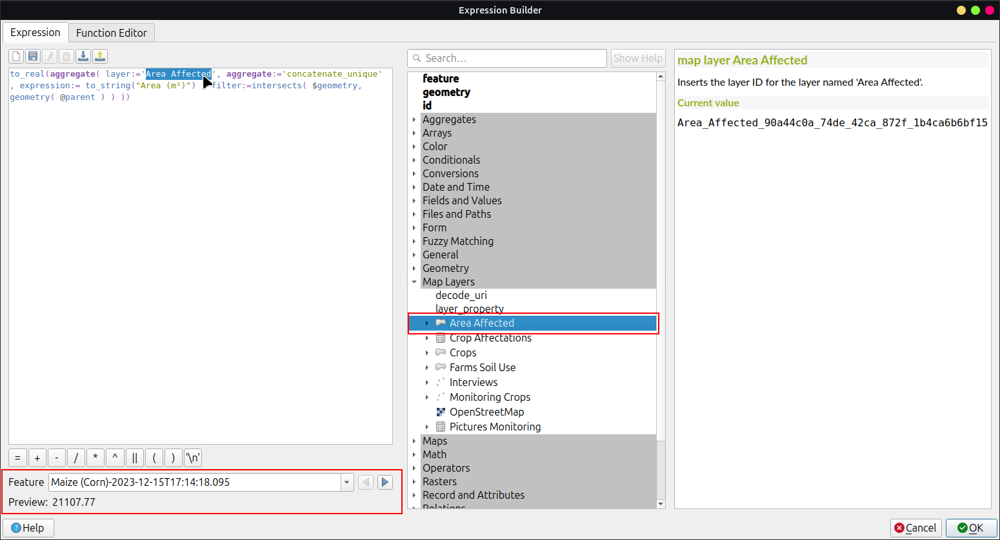
{kind=link}
Additional Variables¶
Read the GNSS Positioning Documentation to store location details in attributes.
QFieldCloud provides three expression variables for attribute default values and conditional visibility:
@cloud_username: Returns the username of the logged-in QFieldCloud account.@cloud_useremail: Returns the email address of the logged-in QFieldCloud account.@cloud_team- Returns the name of the Team to which the user belongs within the organization.
Examples of expression variables:
- Insert horizontal accuracy:
@position_horizontal_accuracy - Insert current timestamp:
now() - Insert digitized geometry length:
length($geometry) - Insert custom device variable:
@operator_name - Assign region codes based on spatial intersection:
aggregate( layer:='regions', aggregate:='max', expression:="code", filter:=intersects( $geometry, geometry( @parent ) ) ) - Transform positioning coordinates to project CRS:
x(transform(@position_coordinate, 'EPSG:4326', @project_crs)) y(transform(@position_coordinate, 'EPSG:4326', @project_crs)) - Extract snapped feature attributes:
with_variable( 'first_snapped_point', array_first( @snapping_results ), attribute( get_feature_by_id( @first_snapped_point['layer'], @first_snapped_point['feature_id'] ), 'id' ) )
Define QML Widgets¶
Project Manager
Integrate custom QML widgets to execute advanced form actions.
Example
A QML button widget for external map navigation:
import QtQuick
import QtQuick.Controls
Button {
width: 200
height: width/5
text: "Open in Maps"
onClicked: {
Qt.openUrlExternally(expression.evaluate("'geo:0,0?q=' || $y || ',' || $x"));
}
}
The geo URI above is adapted to work with Android. For Apple Maps the URI can be changed to 'geo:' || $y || ',' || $x.
{kind=link}